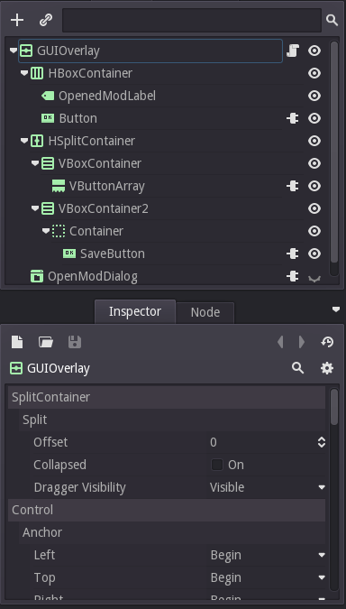
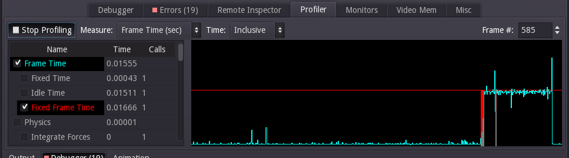

Already a front-end (or back-end) web developer, and curious about writing your own video games? Maybe want to try a new hobby in indie game dev for PC or console, or publish some mobile games? I made the transition, and so can you!
I hope this 10 minute read will give you an overview of what to expect as you journey into this new (but somewhat familiar) world of game development.
Why not HTML5?
There are a lot of pretty cool HTML5 based game engines in JS that you can get hacking at right away. These are really cool, but I feel you'll quickly run up against limits if you are doing anything beyond a very basic and very web-focused game. Full game engine environments not only tend to be a lot faster, but can target mobile, desktop, and even console natively with much lower overhead. The only disadvantages, of course, is it's more tools to learn, but game dev is already sufficiently different to erase most advantages you might gain by coding in JavaScript.
Why not Unity3D?
You might be confused why I wouldn't recommend Unity3D. To be honest, perhaps Unity3D is the right game engine for your next project -- it is much more popular than Godot, and has a large asset library and although it lacks in the 2D department, it does sport a more sophisticated 3D engine. However, if you are used to web development, you probably prioritize the same things I do in tooling: light-weight, modular, and open source -- none of which describe Unity3D. Godot fits the bill nicely: it weighs in at only 16.6 MB zipped, only adds a few MB to builds, has a familiar DOM-like node hierarchy, and has a headless CLI making Continous Delivery a cinch. There's also the fact that Unity3D is expensive: the "pro license", at the time of writing this article, was $125 per month, yikes!
Godot
Godot Engine, download for macOS, GNU/Linux, and Windows.
If you've read any other articles on this site, it might not surprise you that I recommend using free and open source software. As a web developer, this probably seems like a natural choice, as almost all the tools that power the web, from the Linux servers to frameworks like Rails or Django, are FLOSS. The advantages of this: Open APIs, community of helpful people, and lightweight and customizable dev environments.
While game development has not yet caught the free software bug like web dev has, this is quickly changing as more and more FOSS game dev tools are popping up. Out of them, I'd personally advocate using Godot, for the following reasons:
- It's an actively developed, free open source project with a friendly community
- It's all-inclusive: Tooling in game development is pretty awful to begin with compared to web dev, Godot has the potential to fix that
- It lets you develop on and for all platforms, including deploying to the web1
- It has first-class 2D and 3D1 support
- It's incredibly lightweight and flexible compared to every other engine of comparable features out there
- It's language and structure is easy for web developers to pick up
With that in mind, I'll try to explain the key concepts of Godot in a way that web developers should find easy to understand.
The DOM of Godot: Godot's scene structure
Everything in your Godot game exists in a hierarchy with some methods familiar to any front-end programmer (get_parent(), just like JavaScript's parent(), and node.get_node('MyNode') is somewhat similar to node.querySelector('MyNode')).

- Your
Node2DorSpatialare more or less "blank" elements -- kind of like your divs or spans - If you are coding a 2D game, most things are absolutely positioned to the top-left corner of the screen, with the exception of GUI elements, which can be anchored to screen edges
- If you are coding a 3D game, everything is absolutely positioned from a 3D origin
(0, 0, 0). - Every scene can have both 2D and 3D elements: By default, the 2D elements float above the 3D elements, enabling you to make a 3D game but make your GUI in "true" 2D
The "Dev Tools" of Godot
Godot's GUI offers a node hierarchy inspector much like dev tools. Ensure you run your game with Remote debug and Sync scene changes enabled (Click on the little "Broadcast" icon near the play button). With this on, when you make changes while the game is running, you'll see them reflected immediately in the game. You can utilize this just as you would Dev Tools: get the bulk of the work done ahead of time, then make final tweaks and adjustments to polish up your scene. This even works when running on mobile!
Godot also affords some powerful inspection and profiling tools. You can profile code, memory usage, and also inspect the live scene tree ("DOM").

Componentization
You can save scenes in separate files -- this is similar to componentizing with web frameworks like React or Polymer. These can be re-used just like a regular node.
Scenes saved in separate files can expose typed properties (much like React propTypes) using the export syntax, for example for an integer between 0 and 90, export var(int, 0, 90) angle. This not only exposes the property to outer code and enables getters and setters, but also exposes it in the GUI so you can do live tweaking of it (see above).
Extension is also possible, although I'd generally advocate using composition vs extension as much as possible with Godot, since sometimes extension can lead to some finicky situations.
Keeping things neat
External editors with Godot
If you have a strong preference for text editors, like I do, then you should be happy to learn that Godot is generally agnostic when it comes to editing. In fact, you don't need to use the Godot IDE at all, since even the scene files are plain-text and easily editable, in an ini-ish format.
Repository structure
As with web development, you'll want to put all your code in a git or mercurial repo. You likely will want to setup Large File Store in git so it won't churn quite so much on huge binary assets.
I've seen a few different repo structures for game code, but this is the one I use:
game/
- engine.ini
- scripts/
- Hero.gd
- scenes/
- Hero.tscn
- images/
- hero_sprite_sheet.png
- etc
msrc/
- Media source file
- xcfs, psds, etc
notes/
- Design documents, TODOs
While Godot 2's web and 3D support are passable, Godot 3, with a release just around the corner, will offer spectacular improvements to 3D, and partner with Mozilla to deliver first class web export support, surpassing all other options. ↩